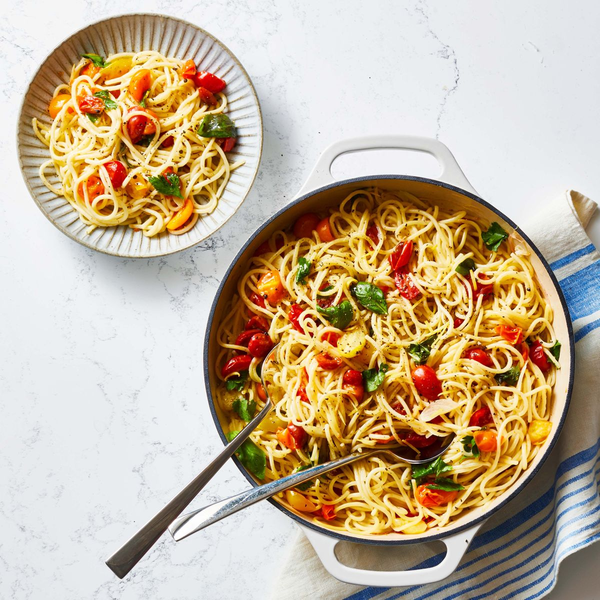

Home
Spaghetti

Description
Combine noodles, fresh tomatoes and water, then simmer for perfectly cooked pasta and a luxurious sauce all in one pot.
Ingredients
- 1 lemon 12 oz. spaghetti 2
- Cloves garlic, thinly sliced 1
- Small red onion, thinly sliced 1/2 c.
- Dry white wine 2 tbsp.
- Olive oil Kosher salt and pepper 1 1/2 pt.
- Assorted color cherry or grape tomatoes, halved 1/2 c.
- Parsley leaves, roughly chopped 1 c.
- Basil leaves, roughly chopped
- Grated Parmesan or vegan Parmesan alternative, for serving
Steps
-
From lemon, peel 4 strips of zest and thinly slice, then squeeze 2 tablespoons juice.
-
In a large skillet or Dutch oven, place spaghetti (it should lie flat on the bottom). Add garlic, onion, lemon juice, wine, oil, 4 cups water, 3/4 teaspoon salt and 1/2 teaspoon pepper. Bring to a boil and boil gently, stirring frequently, 5 minutes.
-
Fold in tomatoes and continue to boil gently until pasta is al dente and nearly all the liquid has been absorbed (absorption will continue).
-
Stir in lemon zest and parsley, then fold in basil. Serve with grated Parmesan if desired.